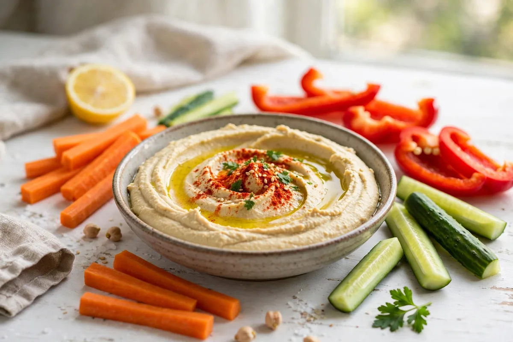
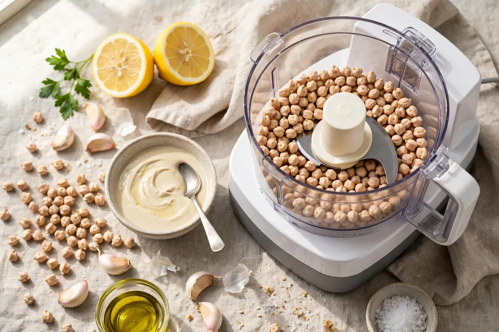
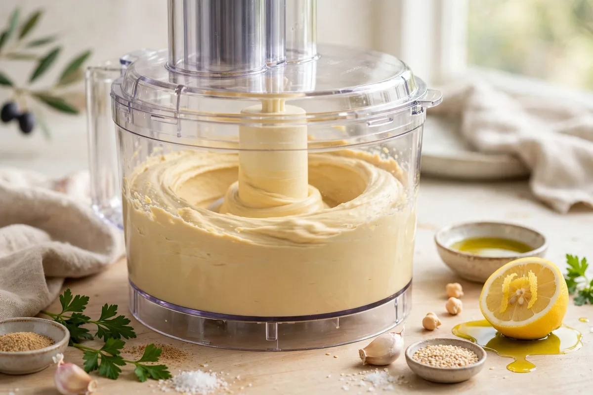
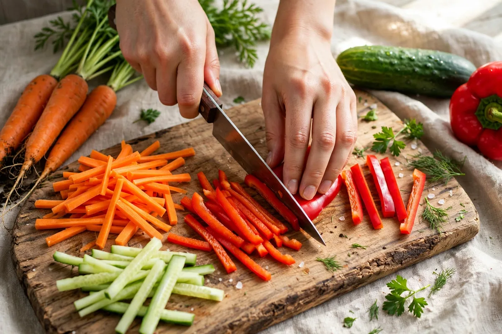
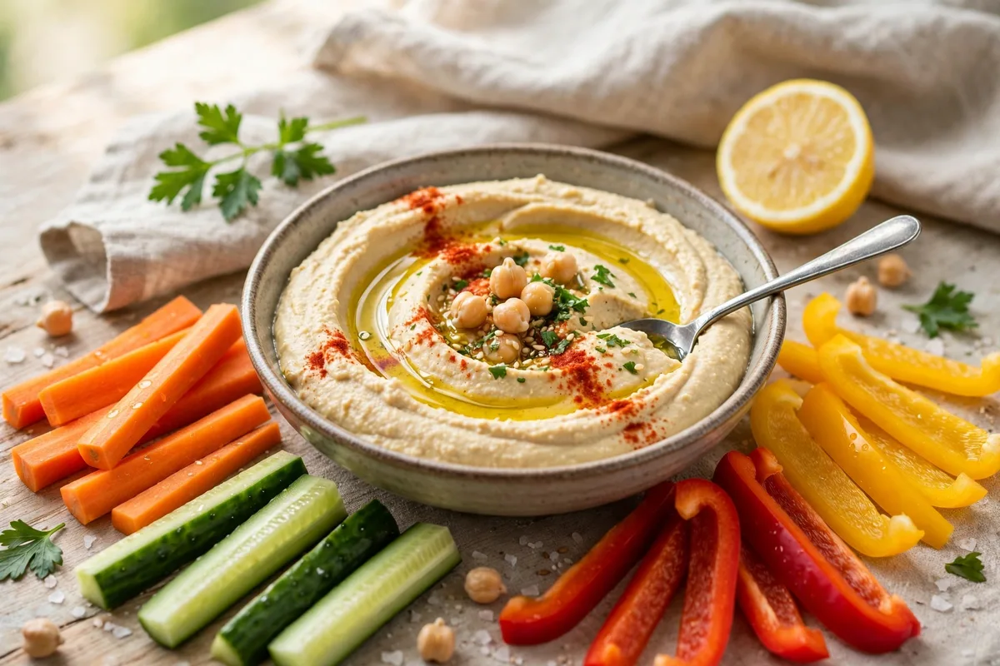

Hummus & Veggie Sticks
Creamy homemade hummus with a swirl of olive oil, served with crunchy carrot, cucumber and pepper sticks — a fresh, healthy snack in 15 minutes.
Prep: 15 minutes · Cook: 0 minutes · Method: Blended & served
Jump to recipe ↓ 📌 Pin this recipe

Why you will love this hummus
This is the hummus that ruins shop-bought hummus forever — silky, lemony and creamy, with a swirl of good olive oil and a pinch of paprika, scooped up with crunchy vegetable sticks. It takes 15 minutes and one food processor.
Hummus & Veggie Sticks — full recipe
Ingredients

- For the hummus
- 1 can chickpeas (400 g), drained and rinsed
- 3 tbsp tahini
- 2 tbsp lemon juice
- 1 garlic clove
- ½ tsp salt
- ¼ tsp cumin
- 3 tbsp cold water
- 2 tbsp olive oil
- For the veggie sticks
- 2 carrots, cut into sticks
- 1 cucumber, cut into sticks
- 1 red bell pepper, cut into strips
- 4 celery stalks, cut into sticks
Method — step by step
- Step 1 — Add everything to the processor. Put the chickpeas, tahini, lemon juice, garlic, salt, cumin and cold water into the food processor.
- Step 2 — Blend until smooth. Blend for 2 minutes, scraping down the sides once, until silky smooth. Add a splash more water if it is too thick.
- Step 3 — Cut the vegetables. Cut the carrots, cucumber, pepper and celery into sticks about the length of your finger.
- Step 4 — Taste and adjust. Taste the hummus — add more lemon for brightness, more salt if it tastes flat, or more tahini for richness.
- Step 5 — Serve with a swirl. Spoon the hummus into a bowl, swirl the top with the back of a spoon, drizzle with olive oil and paprika, and arrange the veggie sticks around it.



What to serve with it
This hummus is a snack on its own, but it is especially good with:
- With pita bread — warm pita, torn into pieces for scooping.
- With crackers — a crunchy cracker and a thick scoop.
- In a wrap — spread it in a wrap with salad and grilled chicken.
- On toast — a thick layer on sourdough with a drizzle of oil.
- On its own — a bowl, a spoon and some veggie sticks.
Chef tips
- Blend it for a full 2 minutes — that is what makes it silky instead of grainy.
- Use cold water — it keeps the hummus light and fluffy while blending.
- Peel the chickpeas if you have time — it makes the smoothest hummus of all.
- Taste before serving — hummus always needs more lemon or salt than you think.
- Warm the tahini jar — run it under warm water so it pours smoothly.
Variations
- Roasted Red Pepper: blend in a roasted red pepper for a sweet, smoky hummus.
- Beetroot: add a small cooked beetroot for a pink hummus.
- Spicy: add a pinch of chilli flakes and a drizzle of chilli oil.
- Herb: blend in a handful of parsley or basil.
- Sun-Dried Tomato: add 2 tbsp sun-dried tomatoes for a rich, savoury version.
Make ahead & storage
Keeps in the fridge for up to 5 days in a sealed container, with a thin layer of olive oil on top to stop it drying out. Stir well before serving. Not suitable for freezing. Cut the veggie sticks the day before and keep them in cold water in the fridge.
Frequently asked questions
Why is my hummus grainy?
It was not blended long enough, or the tahini was old and thick. Blend for 2 full minutes.
Can I use dried chickpeas?
Yes — soak them overnight and boil until very soft, about 40 minutes.
What if I do not have tahini?
Use smooth peanut butter instead — it tastes a little different, but it still works.
Is hummus healthy?
Yes — chickpeas, tahini and olive oil are all full of fibre and good fats.
Kitchen equipment you will need
- A food processor
- A knife and chopping board
- A spatula
- A serving bowl
- Measuring spoons
Blend it for a full 2 minutes. That long blend is what turns grainy chickpeas into silky hummus — stop early and it stays gritty.